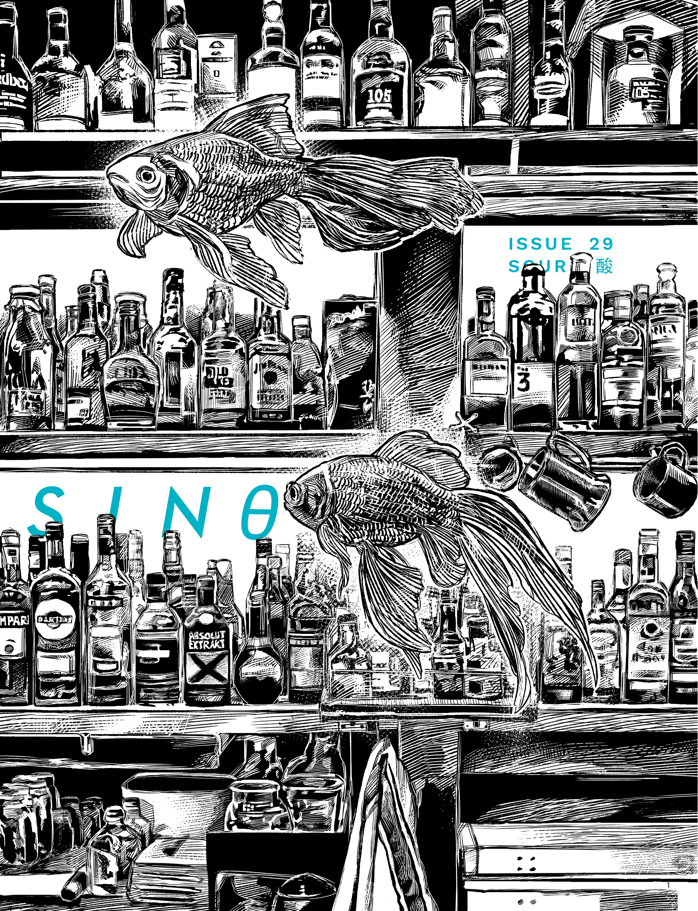

ORDER SINθ #29 NOW
Your tongue stings with raw lemon, sherbert, salt-and-vinegar chips, leaving an acidic taste behind. “SOUR 酸” chronicles sourness and its multiplicities—a look into candy that fizzles before turning sweet, into relationships that spark and burn and fester into resentment. Dig into flavor and feeling, into work that tingles the senses and burns holes in its wake.
- Managing Editor Chi Siegel talks with filmmaker Max Disgrace on trans and erotic narratives, and his latest short Dismantle Me (2023).
- For our student spotlight, Juliette Wu talks to animation student Grace Choi about Choi’s explorations in film and illustration.
- Senior Editor Laetitia Keok meets novelist, playwright, and translator Jeremy Tiang in New York City. They discuss culture-crossing, historical research, and Tiang’s new multilingual play Salesman之死 (2023).
- Editor-in-Chief Jiaqi Kang chats with Norwich-based Sichuanese author Yan Ge about the entanglements between realism and fantasy, language and femininity, and ornament and meandering that have led Yan to find a home for her writing in a non-place.
- Cleo Qian’s “Izu, 2016” offers summer reflections on absence and finding closure; read Ruoyu Wang’s “New Year’s Resolutions” on reconnecting across time and space.
- Tension builds in Cleo Qian’s “But Rain is Falling,” a found poem integrating subtitles from The Handmaiden and A Tale of Two Sisters.
- Dislike for LaCroix bubbles into yearning in Ruoyu Wang’s “I Hoard Six Cans of LaCroix Into My Bag After Watching You Drink One.”
- Homebound while Miss Hong Kong airs, Jennifer Wong dreams of class privilege, beauty, and education abroad in “Revisions, Mark Six Lottery Balls, and Miss Hong Kong.”
- Beina Xu and Renny Gong dig up shared pasts to probe at connections and memories.
- Grace Chao and Ye Ning locate desires for belonging and solace in unexpected places and people.
- Through comics, paintings, and prints, Aimee Deng conjures ethereal vignettes that surface the ambiguities in intimacy.
- Art by Cadence Li and Jacelyn Yap evoke pungent tastes that provide unruly repose and rejuvenation.
Front cover by Juliette Wu.